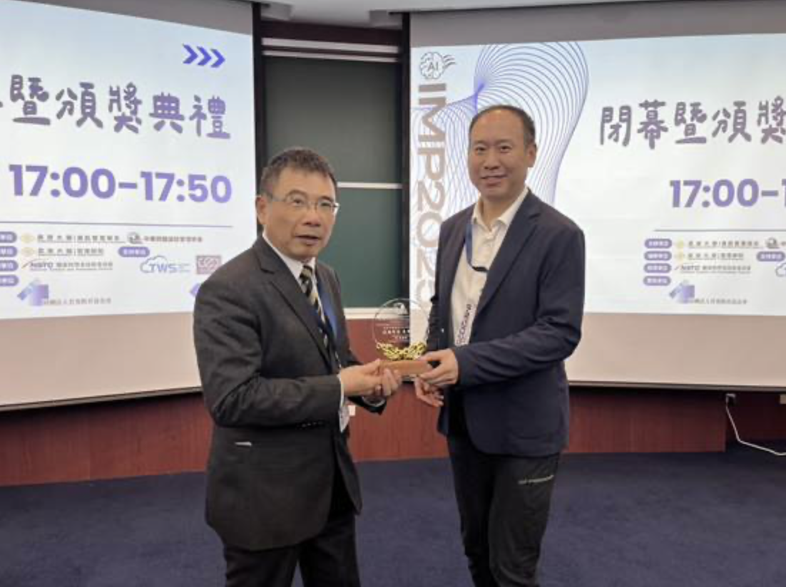
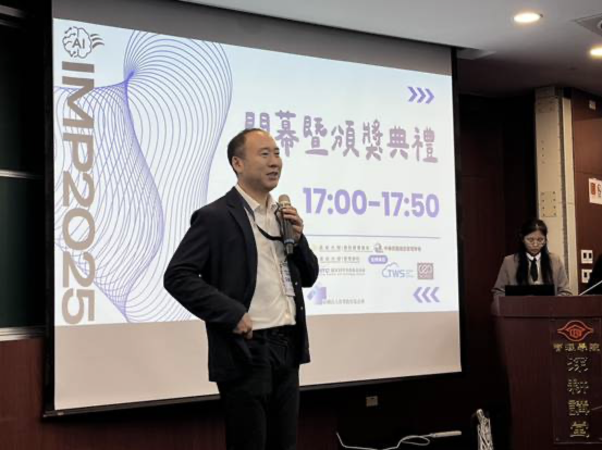
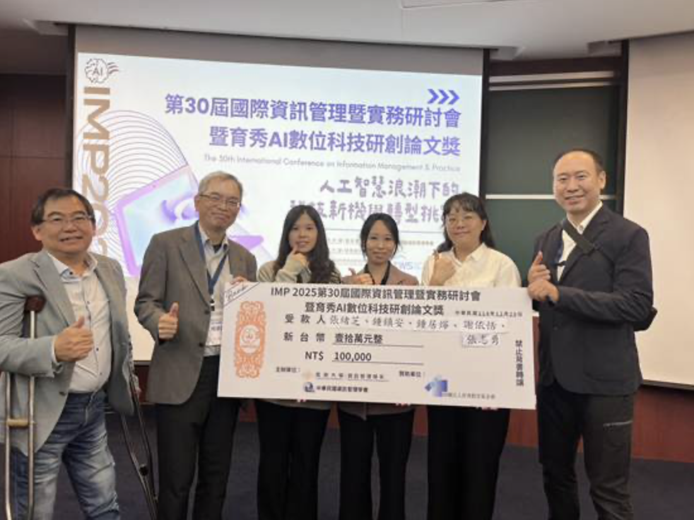
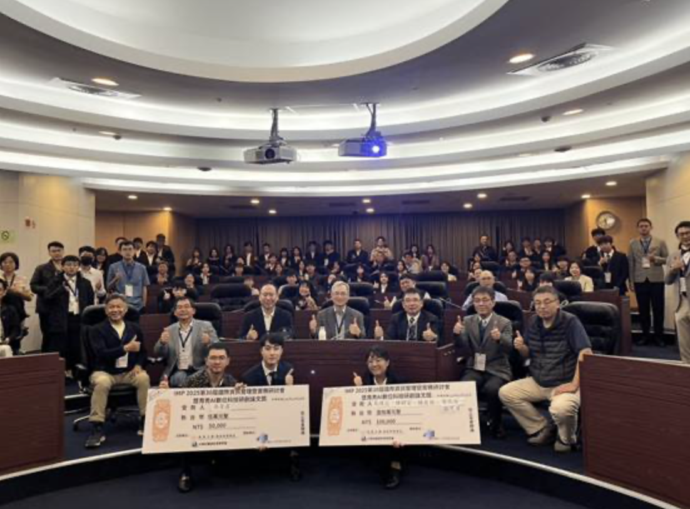

【學會成果】啟迪智慧 惠澤學子 _ 育秀AI暨數位科技研創論文獎媒體報導
資訊管理學會財團法人育秀教育基金會贊助資管學會舉辦IMP 2025國際研討會暨育秀AI數位科技研創論文獎，12/20在長庚大學盛大展開，全國資管系所師生 上百人參與海內外貴賓主題講演、AI產學論壇及發表近百篇論文。 資管學會蕭理事長表示：資管學會是全國最大各校相關科系最多的學會；學會非常重視推動新興資 訊科技的管理與應用，今年是第30屆IMP國際研討會，更欣逢生成式AI等爆炸性成長，加重了資管 學域的使命與挑戰。蕭理事長特別感謝育秀教育基金贊助舉辦育秀AI數位科技研創論文獎，特頒「啟 迪智慧惠澤學子」感謝獎座予苗執行長，以彰顯基金會不僅增添了學術動能，同時也展現出企業對AI 科技新秀的誠摯期待。

本次研討會暨AI論文獎，一共收到上百篇論文投稿，歷嚴謹論文審查、最佳文評選及現場報告激烈 的競爭，脫穎而出特優、優等及佳作獎項。特優獎由淡江資工及人工智慧學系張緒芝等5人團隊奪得 ，探討AI運用於長時間日照中心多模態理解與語義生成架構；優等獎由中央警大資管系吳育鑫獨得， 探討從深度偽造辨識到語者驗證的跨任務遷移；在AI領域的發展與應用卓有貢獻。

基金會苖執行長表示：基金會一直以來都非常關注新興科技的發展及相關人才的培育， 以往已在大專及高中等基層著力，今AI論文獎特延伸人才培育的價值鏈到博碩士，希 望在AI、BlockChain及Cloud等新興科技的大爆發時代，為台灣的產學界盡一份心力。 閉幕頒獎典禮於下午5時開始，師生匯聚擠滿深耕講堂，不僅參與了獲獎的喜悅，也分享 交流了研究歷程與心得，大會在歡欣及對未來的滿滿期待中圓滿閉幕。

AI論文獎的召集人政大楊教授表示：資訊管理領域在每次資訊科技重大變革之後，都帶資 訊管理與應用的大爆發，非常感謝資管學會與育秀基金會，共同再次開拓了AI資管學域新 的契機；也要感謝共同主辦校長庚大學廖主任團隊、數發和台智雲的算力、及天宿公司的 論文存證等的支援，共同來圓滿完成論文獎這項使命。
